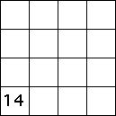

| 4(b) |  |
| ||||||||||||||
| Because T4 gives the upper right corner of the unit square, T1 must take the upper right corner to the lower left corner. This can be done by a 180 deg rotation. To guarantee the IFS generates the unit square, some translations must compensate for the change of position induced by the rotation. | ||||||||||||||||
Return to Homework 2 Practice.